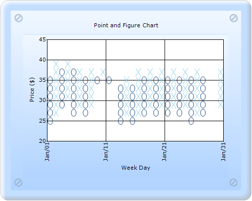

To create a Point and Figure chart with the HeightBox property through ChartModel:
1. In Controller, create an instance of MVCChartModel.
2. Create an instance of ChartSeries, and set the SeriesType to PointAndFigure.
3. Set the ChartSeries, ChartArea, and ChartModel properties.
4. Set the HeightBox property of the series.
5. Return view to the corresponding View page after setting the ChartModel to the ViewData.
|
[C#] public ActionResult SimpleChart() {
MVCChartModel chartModel = new MVCChartModel(); // Create chart series and add data points into it. double[] points1 = { 35.250,37.750,39.000,38.275,37.750,37.750,37.275,36.250,35.750,35.250,36.250,35.250,34.500, 35.625,35.500,36.625,36.275,36.250,36.875,37.250,36.875,36.500,37.125,36.275,35.875,36.625, 27.125,26.250,27.000,27.250,37.500,38.500,39.500,38.875,38.500,39.000,38.500,28.500,29.000, 29.000,40.000,29.875,29.875,28.875,28.500,28.250,28.875,29.275,29.275,29.750,29.500,29.275, 28.500,27.750,27.625,27.500,26.500,25.000,26.625,26.000,25.875,25.000,25.250,25.125,25.050};
double[] points2 = { 25,27.500,28.750,28.025,27.500,27.500,27.025,26.250,35.750,35.250,36.250,35.250,34.500, 25.625,25.500,26.625,26.275,26.250,26.875,27.250,26.875,26.500,27.125,26.275,25.875,26.625, 27.125,26.250,27.000,27.250,27.500,38.500,39.500,38.875,38.500,39.000,28.500,28.500,29.000, 29.000,40.000,29.875,29.875,28.875,28.500,28.250,28.875,29.275,29.275,29.750,29.500,29.275, 28.500,27.750,27.625,27.500,26.500,25.000,26.625,26.000,25.875,25.000,25.250,25.125,25.050};
DateTime current = new DateTime(2004, 01, 1); int numPoints = points1.Length;
ChartSeries series = new ChartSeries("Series 1"); for (int j = 0; j < numPoints; j++) series.Points.Add(current.AddDays(j), new double[] { points1[j], points2[j] });
series.Type = ChartSeriesType.PointAndFigure; series.Text = series.Name; series.ReversalAmount = 0.0; series.HeightBox = 2f; series.ConfigItems.FinancialItem.PriceUpColor = Color.LightSkyBlue; series.ConfigItems.FinancialItem.PriceDownColor = Color.FromArgb(33, 76, 129);
chartModel.Series.Add(series);
//---------Set the ChartModel and ChartArea properties that you want------
ViewData.Model = chartModel; return View(); } |
6. In the View page, invoke the ChartBuilder by using the control ID as the first argument, and convert the ViewData to MVCChartModel and set it as the second argument.
|
View [ASPX]
<%= Html.Chart("SimpleChart",(MVCChartModel)ViewData.Model) %> |
|
View [cshtml] @(new HtmlString(Html.Chart("SimpleChart",(MVCChartModel)ViewData.Model).ToString()))
|
7. Build and run the code, to get the following output:

Figure 245: Point and Figure chart with HeightBox as 2f